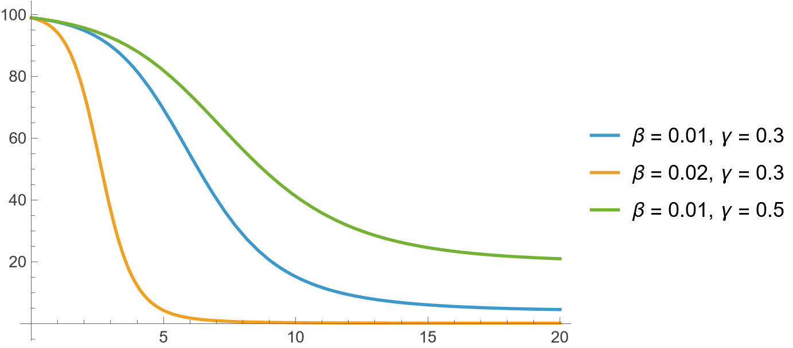
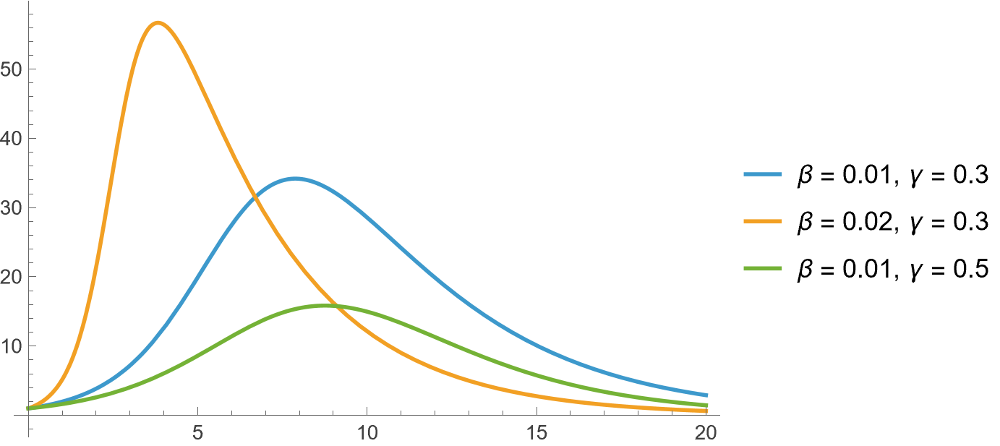
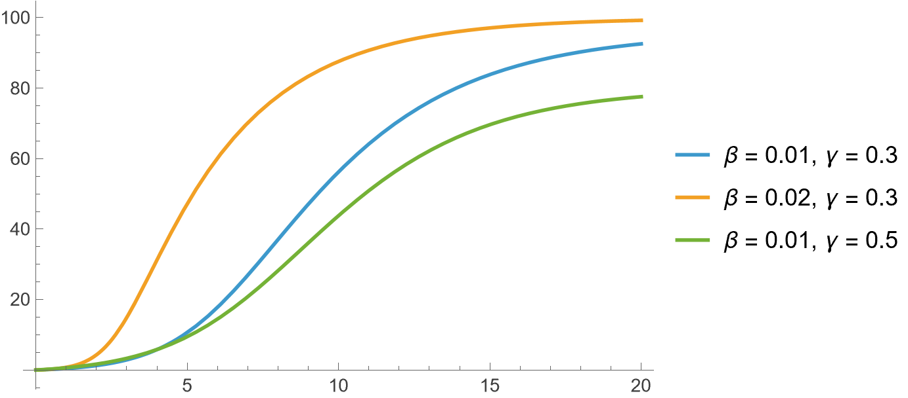
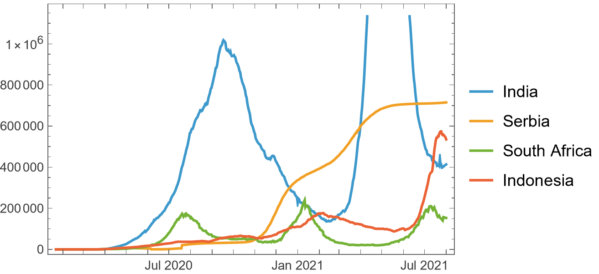

Epidemiology
22 March, 2026
SIR model
SIRIn Population Growth I introduced a simple model for how populations evolve over time. But real-world systems are rarely that simple. In this post, I shift focus to epidemiology, where we model how diseases spread using the SIR framework and a very natural extension of it. model governs the spread of disease in a population containing N people. Categorise everyone into three groups: susceptible (S), infectives (I), and recovered (R). The flow is as follows:
----- ß ----- a -----
| S | --------> | I | --------> | R |
----- ----- -----that is, people move from S into I at a rate of β, and from I into R at a rate of γ. These are called the rates of infection and recovery, respectively. In differential equations, we write
S′ = −βSI, I′ = βSI − αI, R′ = αI.
β and α are usually predicted using data. The total population N is assumed to be constant, that is N = S + I + R at all points in time. A central parameter is the reproduction number which captures the balance between infection and recovery. For SIR model we have R0 = β/γ.If β > γ, the infection rises and if γ < β, it dies out. Solve and plot the system of equations to get:



For any value of β and γ, the dynamics look monotonous. Infection rises upto a point, and then starts decreasing to eventually vanish. However, in real life that is not always the case. We show some examples of actual infection trajectories in some countries below:

Various models exist in the literature regarding disease spread, but one from an exploratory point of view that has caught my attention is [1]. They incorporate several new additions to the system of equations discussed above, and their model is as follows:
$$\begin{aligned} \frac{dS}{dt} &= -\beta S(t) I(t) + f(t), \\ \frac{dI}{dt} &= \beta S(t) I(t) - \gamma I(t) + g(t), \\ \frac{dR}{dt} &= \gamma I(t) + h(t). \end{aligned}$$
where f(t) is people moving in/out without infection, g(t) is infections coming from outside, g(t) is recovered returning from outside. To avoid over-fitting, the functions f, g, h are given the following forms:
$$\begin{aligned} f(t) &= \lambda_1 t + \lambda_2, \\ g(t) &= a_1 b_1 \cos(b_1 t + c_1) + a_2 b_2 \cos(b_2 t + c_2) + a_3 b_3 \cos(b_3 t + c_3), \\ h(t) &= p_1 t + p_2. \end{aligned}$$
References
[1] AlQadi H, Bani-Yaghoub M (2022) Incorporating global dynamics to improve the accuracy of disease models: Example of a COVID-19 SIR model. PLOS ONE 17(4): e0265815. doi: 10.1371/journal.pone.0265815
Thanks for reading. Return to see all blog posts, or to the home page.